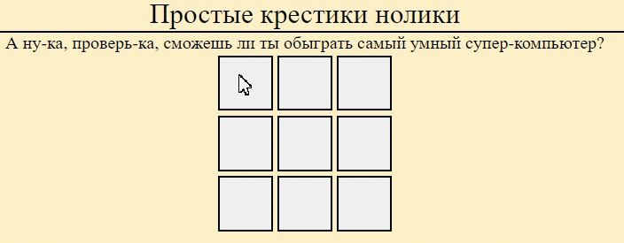
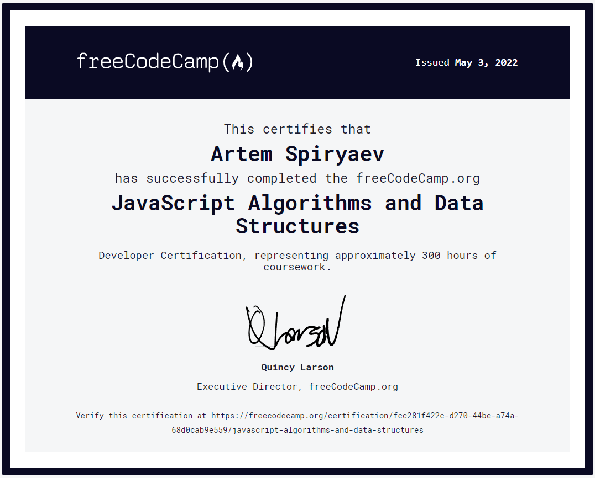

SPIRYAEV'S WORK PLACE
Интерактивная однолинейная схема учебной тяговой подстанции КрИЖТ

В качестве дипломного проекта с помощью Unity3D мною была разработана интерактивная однолинейная схема, в которой можно производить операции с коммутационной аппаратурой, при этом динамически окрашиваются элементы схемы, а также изменяются значения моделируемых параметров электрической сети (напряжений, токов).
В программе предусмотрено применение плакатов и знаков электробезопасности. При вывешенном плакате на КА обеспечивается запрет операций с этой аппаратурой. При переключениях осуществляется проверка возможности операции, и, если оператор совершил неверное действие, происходит звуковое оповещение о недопустимости выполнения операции. Все действия оператора фиксируются и заносятся в журнал событий.
Тест по проверке знаний электромонтера контактной сети

Простой тест для проверки знаний электромонтера контактной сети разработн на Unity3D для android смартфонов.
Данное тестирование использовалось при проведении конкурсов "Лучший электромонтер контактной сети". В результате тестирования предоставляется статистика верности ответов по категориям (охрана труда, устройства контактной сети и т.д.)
Крестики-нолики
Самая обыкновенная игра, при разработке которой впервые познакомился с JavaScript, структрой DOM-дерева.
Цифровая Цифровая Красноярская дистанция электроснабжения. Текуший ремонт контактной сети

В целях обеспечения безопасности движения поездов, поддержания работоспособного состояния устройств электроснабжения необходимо постоянно проводить мероприятия по получению максимально достоверной информации о фактическом техническом состоянии контактной сети, анализировать полученную информацию и принимать управленческие решения. Для более качественного, удобного, наглядного и оперативного контроля за проведением ТР районов контактной сети в ЭЧ-3 разработано веб-приложение по автоматизированному графическому отображению на схеме данных о проведенном ТР.
Данные по ТР оформляются в таблице excel по установленному шаблону, которые загружаются в веб-приложение при нажатии на соответствующую кнопку. По результатам обработки данных участки схемы принимают различные цвета в зависимости от даты проведения ТР и периодичности проведения ТР. Нажатием на участок контактной сети появляется информационная панель с данными о ТР. Обнаруженные в процессе обработки ошибки прописываются в новом файле excel, который можно скачать и в нем провести корректировку.
Сертификаты
Обо мне
Информация
- Мои характеристики:
- 1
- 2
- 3
Контакты
- Мои характеристики:
- Электронная почта
- ВКонтакте
- Резюме hh.ru